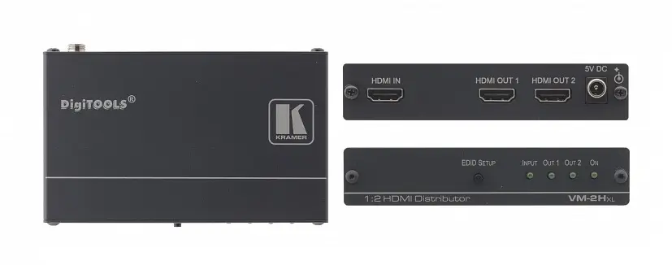
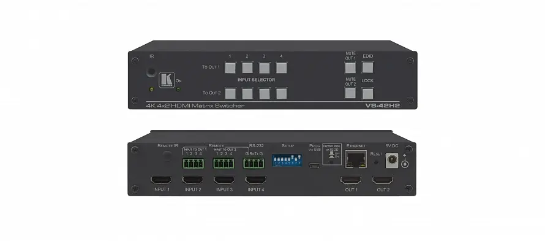
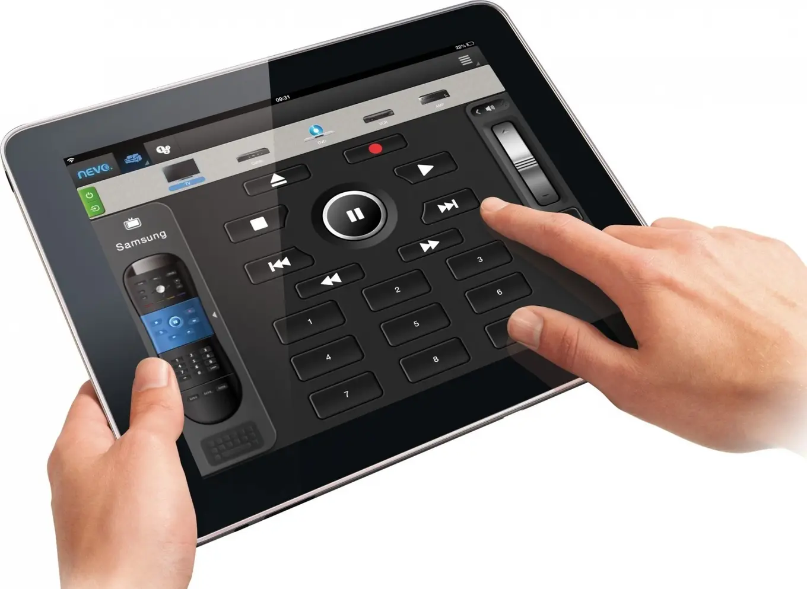
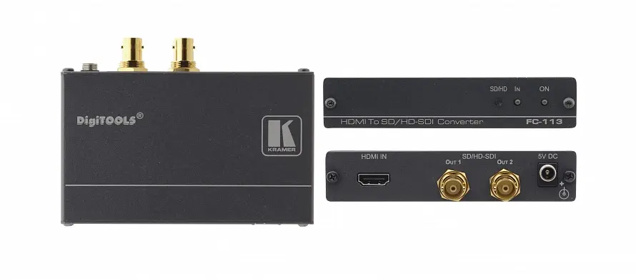
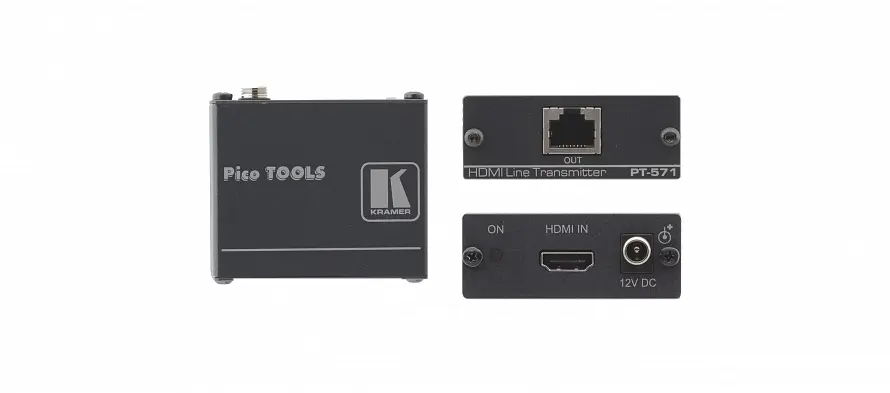
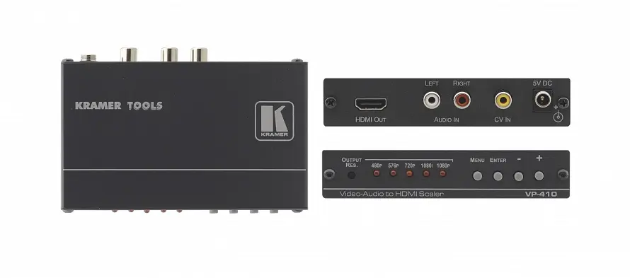
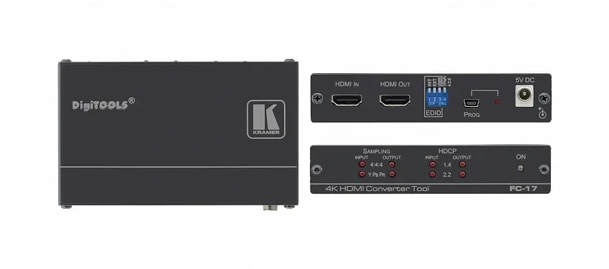
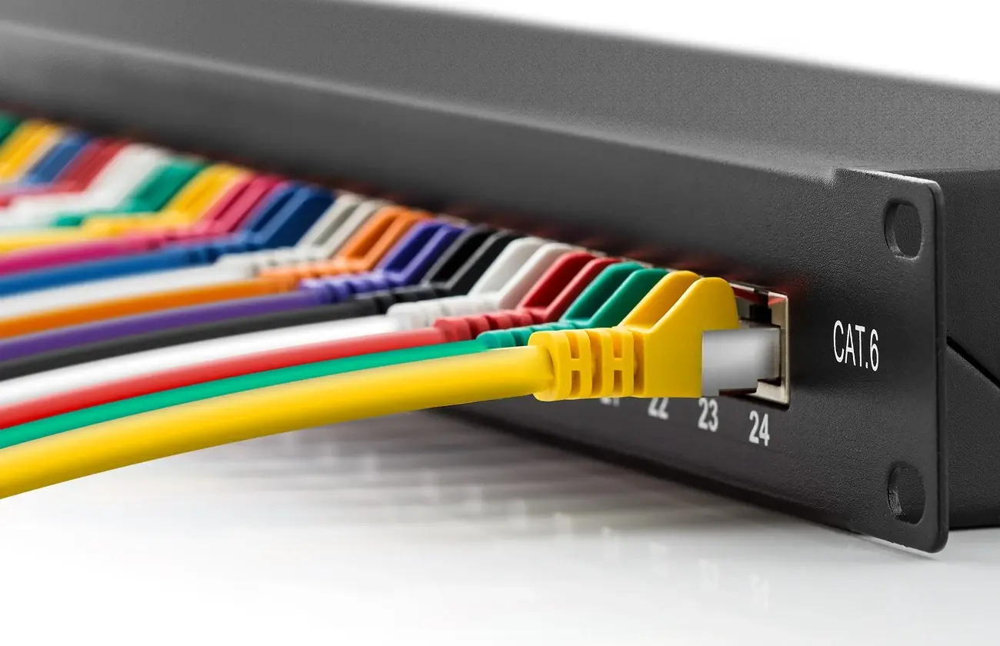

Виды коммутационного оборудования
В зависимости от выполняемой функции коммутационные устройства можно разделить на несколько видов, основные из которых перечислены ниже. Стоит, однако, отметить, что современное коммутационное оборудование часто совмещает множество функций сразу, поэтому приведенная классификация является в известной степени условной.
Усилители-распределители сигнала

Функцией усилителей, что ясно из их названия, является усиление сигнала до требуемого уровня и его распределения. Усиление может потребоваться для компенсации ослабления сигнала при передаче по линии или для приведения номинального уровня сигнала одного устройства к номинальному уровню сигнала другого устройства. Те или иные усилительные функции входят в состав практически любых электронных коммутационных устройств. Распределение позволяет направить сигнал из одного источника сразу на множество приемников. Работу распределителя сигнала можно увидеть в магазине бытовой электроники, когда два десятка телевизоров показывают один и тот же ролик.
Коммутаторы и матричные коммутаторы

По своей сути коммутатор – это переключатель, коммутирующий одно устройство к другому. Например, трансляция аналитической программы по команде редактора в студии моментально переключается на рекламный ролик. А во время видеоконференции коммутатор обеспечивает переключение между источниками презентации(докладчиками) и позволяет вывести то или иное изображение на основной экран. Матричные коммутаторы используются для многосигнальной коммутации и отличаются большим числом входов и выходов и богатыми настройками. Основным свойством матричного коммутатора являются возможность переключения сигнала с любого из его "входов" на один, несколько или все "выходы" коммутатора.
Системы управления

Системы управления предназначены для управления другим оборудованием. Здесь можно выделить две составляющие: устройства пользовательского интерфейса, такие как кнопочные панели или сенсорные экраны, и контроллеры. С помощью кнопок, планшетов и интерактивных экранов пользователь может управлять работой оборудования. Например, опустить проекционный экран, задвинуть шторы и включить проектор. Контроллеры же отвечают за непосредственную раздачу управляющих сигналов соответствующим устройствам. Именно контроллер осуществляет, например, инициацию переключения источников сигнала коммутатором, описанную выше.
Преобразователи форматов

К этой категории коммутационного оборудования относятся устройства, преобразующие один тип сигнала в другой, а также выделяющие из сигнала определенные составляющие. Преобразователь форматов используется для конвертации аналогового VGA сигнала в цифровой DVI или цифрового SDI в компонентный YUV, для изменения частоты развертки видеосигнала, для добавления аудио в видеоряд (эмбеддинг) или, наоборот, извлечения аудио из него (деэмбеддинг).
Удлинители интерфейсов, репитеры

Класс устройств, предназначенных для увеличения расстояния передачи сигнала. Известно, например, что максимальная длина кабеля интерфейса VGA составляет 15 метров, для компонентного сигнала и вовсе всего 5 метров. Увеличение расстояния передачи достигается установкой пары устройств – передатчика и приемника. Передатчик принимает входной сигнал (VGA, composite video, YUV и т.д.) и выдает его через интерфейс, допускающий более длинные линии, скажем, через витую пару. Соответственно, приемник осуществляет обратное преобразование.
Масштабаторы

Масштабаторами называют оборудование, изменяющее разрешение входного сигнала, перед тем как перенаправить его на выходной порт. Например, масштабатор может принимать на входе композитный видеосигнал и преобразовывать его в выходной сигнал формата VGA, XGA, SXGA и более высоких разрешений. Когда масштабатор оснащается несколькими входами, он называется многооконным. Устройство объединяет видеосигналы с нескольких входов в единую картинку, соответственно масштабируя разрешение каждого из исходных видео, и отправляет получившийся видеоряд на выходной порт. Как и в случае обычного масштабатора, типы входных и выходных портов могут быть различными в зависимости от конкретной модели устройства.
Специальные AV-устройства

Устройства гальванической развязки позволяют полностью исключить прямую электрическую связь между устройствами. Гальваническая развязка применяется для исключения помех и для защиты оборудования и людей от действия высоких токов. Концентраторы используются для расширения штатных возможностей ввода-вывода системы. Например, USB-концентратор позволяет подключать дополнительные USB-устройства. Генераторы тестовых сигналов используются для настройки видеооборудования. Генератор посылает в линию испытательные таблицы, динамические тестовые изображения, опорные сигналы и другие данные, позволяющие оператору произвести точную настройку устройств вывода изображения.
Кабели, разъемы и иное оборудование

Наконец, относительно простое, но не менее важное коммутационное оборудование, оказывающее порой огромное влияние на качество видеосигнала. Неправильный выбор кабельной продукции и разъемов запросто может свести на нет все преимущества дорогого AV-оборудования. К коммутационному оборудованию также можно отнести металлические кабельные лотки для прокладки коммуникаций, кабель-каналы, шкафы оборудования, гофро-шланги и различные кронштейны для крепления.